Week2 | Rによる自主勉強会
伊﨑 直志
2023年10月13日
準備
Loading Packages
library(tidyverse)
library(dplyr)
library(gridExtra)##
## 次のパッケージを付け加えます: 'gridExtra'## 以下のオブジェクトは 'package:dplyr' からマスクされています:
##
## combinewindowsFonts(family_sans = windowsFont("Noto Sans JP"))
par(family = "family_sans")
knitr::opts_chunk$set(echo = TRUE)第1章 回帰分析の目的
1.1. 相関と因果
相関関係 correlation：「Xが変化すればYも変化する」
因果関係 causality：「Xを変化させればYも変化する」
疑似相関 spurious correlation
「変数XとYに共通の第3の要因Zが存在することによってXとYに生じる見せかけの相関関係」
e.g. 個人所得の増加→タバコへの支出増加、医療・健康への支出増加 ＝タバコと健康の疑似相関
- 時間的先行性: 原因となる現象が結果となる現象に時間的に先立って起きている。
- 共変関係（相関関係）: 原因となる現象が変動すると、結果となる現象も変動する。
- 他条件の同一性: 原因となる現象の双方に与える現象は存在しないか、その影響は統制されている。
1.2. 回帰と予測
一次関数 \(y=a+bx\) の形で表現 →最小二乗法（least squares estimation）（図1.1 →図1.6）
回帰直線、回帰式、回帰係数
回帰式の一方の変数に代入してもう一方の変数の値を計算、予測
ある変数Xの値をもとにして、他の変数Yの値を予測 ＝回帰分析
X：説明変数、Y：被説明変数⇒因果解釈ではなく、あくまで予測解釈！
回帰分析 →Xが与えられた時のYの値の予測
1.3. 自然科学のデータと社会科学のデータ
実験の難しさ（費用等コスト、倫理）
⇔自然科学：変数選択の制約・影響少、実験室実験可（変数統制） [従来的説明]
→現在、社会科学における実験多数：実験経済学等 or 自然実験…（後述）
第2章 統計の基礎知識
2.1. 母集団と標本
（有限集団全体）母集団－（抽出）標本
（確率分布）母集団－（観測値）標本 （←本書）
正規分布 normal distribution
正規分布\(N(平均, 分散=標準偏差^2)\)
正規分布（乱数）: rnorm(個数, 平均, 標準偏差)
rnorm(100, 50, 10) ## [1] 40.78199 59.58499 43.08834 62.46309 40.35268 54.08703 48.25203 50.00647
## [9] 41.06811 47.43520 31.08182 73.30588 61.54588 55.21912 52.36725 34.17300
## [17] 46.85988 39.18313 53.29455 44.49841 49.23361 45.59949 46.23236 47.23018
## [25] 57.61542 40.90142 41.84839 56.75657 47.58624 52.35473 50.60575 62.39340
## [33] 35.10364 40.56680 56.92395 57.03450 39.84486 52.26317 41.72326 46.07097
## [41] 44.84960 62.34428 30.07025 57.41375 37.27619 34.70507 62.24218 47.51925
## [49] 38.34962 49.85662 42.93419 66.90266 26.75831 50.81246 45.17701 58.26941
## [57] 53.45682 44.54030 37.45621 41.13209 42.61237 40.99030 53.03932 47.65931
## [65] 51.65433 49.18438 59.28127 52.11604 64.23524 52.26270 43.20028 49.98921
## [73] 52.48319 39.96195 49.56873 52.47990 53.55746 56.75731 57.31477 58.99211
## [81] 33.72794 61.53150 50.82512 31.84868 50.89122 38.86304 46.06351 32.89058
## [89] 65.30839 54.59659 58.29951 56.15087 50.39860 60.39433 32.66786 33.62091
## [97] 47.02609 64.28124 39.27006 40.39454curve(dnorm(x, 50, 10), 0, 100) #正規分布のグラフ描画
pnorm(60, 50, 10) #大きさ１の標本の値が60より小さくなる確率## [1] 0.8413447| 命令 | 説明 | （英略） |
|---|---|---|
rnorm(n, a, b) |
平均a, 標準偏差bの正規分布乱数をn個発生させる。 | random+norm |
dnorm(x, a, b) |
平均a, 標準偏差bの正規分布について, 密度関数の点xにおける値を計算する。 | density+norm |
pnorm(x, a, b) |
平均a, 標準偏差bの正規分布について, 分布関数の点xにおける値を計算する。 | probability+norm |
正規分布グラフ 描画関数
curve(dnorm(x, a, b), min, max) #curve(関数の式,
横軸の最小値, 横軸の最大値)
2.2. 無作為抽出
母集団から標本を抽出（random sampling）
rnorm(100, 50, 10)## [1] 49.05884 73.13268 51.01357 59.55140 45.20593 38.86718 50.56375 46.94245
## [9] 42.87407 52.17913 48.41622 43.96622 26.83603 68.78299 61.69920 34.68727
## [17] 44.15842 40.40323 46.64518 45.66310 41.40769 60.60057 60.39145 48.42355
## [25] 42.95628 49.67959 53.86128 39.17962 55.00697 61.33716 42.20779 46.41849
## [33] 36.21376 39.37503 59.46811 49.57078 52.52012 42.17344 55.69893 52.84691
## [41] 39.44705 48.83029 52.72490 66.37535 53.75054 51.59439 52.55206 69.54532
## [49] 50.11304 70.04603 60.94566 46.66557 47.69592 51.67907 42.32591 45.36308
## [57] 48.63987 50.61089 45.26807 34.45924 42.34769 61.32676 55.85983 51.76947
## [65] 33.78445 58.00533 44.99217 45.26677 64.21351 63.76836 60.10965 49.63807
## [73] 42.44122 45.17094 35.85155 62.54146 47.81480 25.87376 40.28914 67.23961
## [81] 46.82770 53.68301 30.39007 52.10264 42.31955 54.52133 50.06435 50.02782
## [89] 37.59624 36.73478 48.88675 62.26477 50.02608 39.05345 42.88105 49.78690
## [97] 40.48654 44.35732 49.07252 58.36324Z <- rnorm(100, 50, 10)
Z## [1] 64.68809 52.70779 70.88777 54.79575 34.56548 63.66090 49.58148 57.76393
## [9] 55.99699 56.95317 45.94749 57.52240 55.23403 43.49597 50.27478 54.10760
## [17] 54.27526 46.57010 52.75375 62.59957 50.75910 50.06497 49.61219 48.71415
## [25] 50.67526 59.37540 53.00575 32.50933 37.23605 54.74329 40.99040 61.29233
## [33] 85.06673 67.54389 55.65623 49.16628 42.85863 50.76263 54.34199 45.91724
## [41] 41.72365 44.97401 35.60333 53.05591 54.83583 39.35728 54.51517 65.19931
## [49] 65.10670 24.72599 37.96375 24.41493 36.99981 54.15001 51.63975 52.79986
## [57] 39.60303 47.01833 35.87216 45.13875 36.73408 50.63234 36.01913 41.03029
## [65] 52.65657 43.91733 52.47695 47.94576 58.98741 35.55519 57.99450 49.00170
## [73] 55.97880 51.59534 54.57362 52.25278 46.20932 69.39545 59.40815 60.93001
## [81] 53.11991 40.30529 59.08398 64.80675 41.21302 41.75587 41.58807 49.51359
## [89] 61.63473 40.33225 58.23333 56.25774 68.09154 44.57710 52.35438 49.90153
## [97] 55.51403 34.13190 53.90905 48.40167hist(Z) #ヒストグラム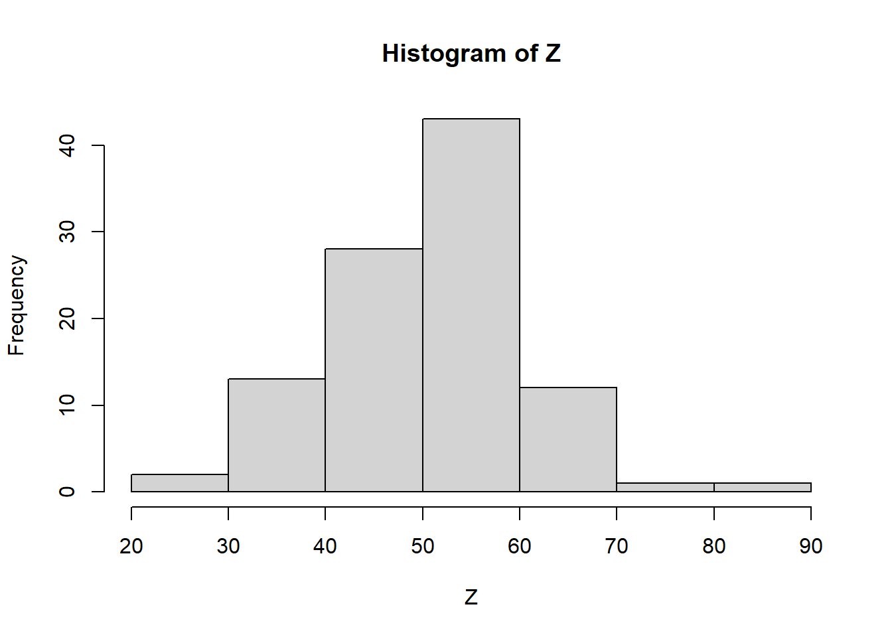
Z[1:10] #最初の10個のデータを抜き出し## [1] 64.68809 52.70779 70.88777 54.79575 34.56548 63.66090 49.58148 57.76393
## [9] 55.99699 56.95317a <- c(5, 10, 100)
Z[a] #5番目,10番目,100番目の位置にある数字を抜き出し## [1] 34.56548 56.95317 48.40167Z[c(5, 10, 100)] #aを使わずに同上の操作## [1] 34.56548 56.95317 48.40167#特定の意味を持つ数値を抽出
max(Z) #最大値## [1] 85.06673which.max(Z) #最大値の位置## [1] 33min(Z) #最小値## [1] 24.41493which.min(Z) #最小値の位置## [1] 52mean(Z) #平均値## [1] 50.57392summary(Z) #基本統計量を一括表示## Min. 1st Qu. Median Mean 3rd Qu. Max.
## 24.41 43.81 51.62 50.57 55.98 85.071:10## [1] 1 2 3 4 5 6 7 8 9 10sample(1:10, 3) #無作為抽出、sample(範囲, 抽出個数)## [1] 2 9 1sample(Z, 5) #sample(標本, 抽出個数)## [1] 65.10670 54.15001 46.20932 53.05591 45.91724sample(Z, 5) #sample(標本, 抽出個数)## [1] 45.13875 54.79575 49.51359 85.06673 43.49597fruits <- c("ミカン", "バナナ", "リンゴ", "レモン", "モモ")
fruits## [1] "ミカン" "バナナ" "リンゴ" "レモン" "モモ"sample(fruits, 1) #fruitsから1個抽出## [1] "レモン"sample(fruits, 2) #fruitsから2個抽出## [1] "モモ" "ミカン"sample(fruits, 1) #fruitsから1個抽出## [1] "レモン"sample(fruits, 1) #fruitsから1個抽出## [1] "バナナ"コイン投げ1
coin <- c("Head", "Tail")
#sample(coin, 5) #うまくいかない ∵非復元抽出になっている
sample(coin, 5, replace = TRUE) #復元抽出, replace=TRUE## [1] "Tail" "Head" "Tail" "Tail" "Tail"2.3. 平均と大数の法則
- ①ベクトルrecのi番目の場所rec[i]に
- ②母集団N(50,10^2)から抜き出した大きさ100の標本の平均を格納する
mean(Z) #標本平均## [1] 50.57392mean(rnorm(100, 50, 10))## [1] 49.39855mean(rnorm(100, 50, 10)) #Z<-rnorm(100,50,10)## [1] 50.83279#より多い試行、抽出1000回、標本の大きさ100
S <- 1000
rec1 <- numeric(S)
for(i in 1:S){rec1[i]<-mean(rnorm(100, 50, 10))}
rec1## [1] 49.57625 51.56141 47.75694 49.32626 49.72887 50.09331 49.34949 48.13545
## [9] 49.09193 48.99845 48.03184 50.46484 50.94275 51.00887 49.13587 51.51007
## [17] 50.66473 49.18496 49.11396 50.75959 52.37572 51.42022 48.50803 50.12632
## [25] 50.07490 49.78675 50.33442 49.43091 49.51304 49.30813 50.28099 50.80785
## [33] 50.35667 49.69804 51.96867 49.56550 51.36428 51.77932 51.96776 50.85230
## [41] 50.84797 51.13963 49.49098 51.01977 49.03340 49.57549 50.05755 51.23849
## [49] 49.03101 49.37646 52.05783 49.60209 49.10094 49.74858 48.59062 51.03802
## [57] 50.81085 51.86051 50.29535 50.27149 50.50229 50.24783 50.52178 49.75907
## [65] 49.56704 52.32507 50.18183 50.80730 50.10078 50.34762 50.15255 50.10237
## [73] 49.12789 49.09466 49.31456 49.59326 49.38570 48.93420 50.43666 50.00526
## [81] 51.04789 51.06589 50.20053 50.20261 49.60876 51.30857 50.64545 50.31858
## [89] 49.75946 50.69580 49.96598 49.53534 49.21874 50.65750 50.01429 50.50171
## [97] 50.09463 49.88119 49.10002 50.55261 50.05639 49.98760 49.68674 49.71932
## [105] 50.02339 49.45288 51.63747 48.95200 50.13699 50.67906 52.23374 49.07130
## [113] 50.55722 49.80192 49.48159 49.12570 49.61620 50.36036 49.07609 50.63980
## [121] 48.75410 49.37483 49.65867 50.59052 51.26102 50.10712 49.65738 49.44728
## [129] 50.47636 50.34816 50.22194 49.38284 49.91535 49.13672 47.35638 51.77470
## [137] 49.35266 49.57513 49.91417 49.25231 48.07487 50.46800 48.66856 50.07297
## [145] 49.26927 49.48017 49.11393 49.34938 50.20591 49.37700 50.90704 49.91710
## [153] 50.16991 49.31174 49.70762 50.24398 51.61294 50.59450 47.12113 50.37218
## [161] 47.40082 50.10252 48.40017 51.22090 50.97742 47.70568 49.43855 50.23194
## [169] 49.21812 50.50042 51.47017 49.77666 48.04896 50.50283 50.06677 49.70723
## [177] 48.99877 48.99873 51.64269 51.12981 50.50424 49.26287 50.86755 49.51713
## [185] 51.33599 48.76175 50.02531 50.02672 49.29911 49.90744 50.95547 50.56122
## [193] 49.46543 49.26939 48.28270 49.56360 49.45447 48.79726 49.78934 49.80940
## [201] 49.98866 50.02536 49.14222 50.92377 49.70698 49.02549 49.12835 49.66692
## [209] 47.27286 48.55274 49.60084 50.37345 50.31057 49.79964 49.21242 49.69627
## [217] 50.36416 51.09089 48.77515 48.11215 49.55439 50.96518 50.87657 50.10220
## [225] 49.62452 51.64175 51.22947 50.07871 50.29177 50.42636 49.28796 49.93194
## [233] 51.08255 51.31526 51.42345 49.75826 49.64518 49.73617 49.42929 50.40010
## [241] 48.66857 49.99853 50.30924 49.61398 47.78832 49.78997 51.13803 49.33555
## [249] 48.75734 50.14405 50.14501 49.13269 49.60758 49.47419 51.25851 50.14969
## [257] 50.45928 50.49647 48.79142 51.82109 49.30168 48.63103 50.84811 49.63995
## [265] 49.75148 49.94332 52.24994 49.49059 49.45086 52.45953 48.12232 49.20428
## [273] 50.95088 49.65441 50.56677 49.52747 50.44805 51.41547 49.61613 49.78879
## [281] 49.69266 50.50467 49.02223 50.03421 50.29199 49.48674 49.32386 50.93787
## [289] 50.33196 50.94427 50.47583 50.93224 50.47445 49.60378 50.41088 49.18621
## [297] 49.65919 51.74811 50.08408 51.39159 51.92215 50.58335 50.62750 49.58989
## [305] 50.96013 51.23138 50.12002 49.51484 50.63164 51.28635 51.35827 50.82374
## [313] 50.38212 49.34706 49.44857 49.80150 49.48034 51.05647 48.39815 51.15341
## [321] 50.40918 49.87541 49.07737 50.50635 51.49128 50.45077 49.63581 50.01255
## [329] 48.83044 49.39787 52.38481 49.26053 50.18309 50.17342 49.78705 50.11923
## [337] 50.84965 48.40718 49.19736 50.43141 51.59030 49.65554 50.40376 49.57684
## [345] 47.95143 50.75631 50.74718 49.48244 49.94144 48.49261 51.29349 50.28967
## [353] 49.29804 50.44279 51.01650 48.66537 48.04320 51.23863 50.10547 50.66830
## [361] 50.04014 48.63211 49.60464 49.59007 50.54838 49.47840 49.99560 48.56442
## [369] 49.88527 49.96726 48.88992 50.45705 51.07042 50.29610 50.49880 48.05290
## [377] 50.56273 50.43824 51.41983 48.80852 49.92186 50.57594 49.31481 49.92102
## [385] 49.11481 50.72224 51.20957 51.43250 49.16109 51.09556 49.47045 50.43533
## [393] 48.34682 50.86638 50.34151 49.18814 49.43775 50.72610 49.87782 48.60649
## [401] 52.75167 50.81451 51.42701 49.81762 50.16444 50.66815 48.90590 50.59793
## [409] 49.50570 48.49078 49.92257 49.27106 50.45507 49.05286 52.08394 48.03400
## [417] 50.46641 50.87603 50.98754 49.82530 52.11682 49.91956 50.44981 50.33291
## [425] 48.64924 51.75571 49.02984 49.72884 50.91529 52.16040 51.92983 49.96673
## [433] 50.95277 49.28758 50.38678 48.60753 50.45659 49.86256 49.73516 48.03649
## [441] 49.63925 49.56195 49.84641 51.01359 48.01271 49.88067 49.63301 49.49787
## [449] 49.25476 49.63420 50.99144 51.31193 50.32640 50.43032 51.57111 50.81253
## [457] 50.38495 49.74473 49.71154 50.95840 51.14969 48.25591 49.45315 50.95000
## [465] 51.32709 49.75611 50.13274 47.83031 47.47748 53.21153 49.79891 49.18729
## [473] 50.92755 50.65236 49.70996 49.23448 48.72530 50.10994 49.35498 50.33045
## [481] 49.03457 49.62031 51.04349 49.29155 48.59478 49.44836 51.69223 50.71662
## [489] 49.67426 48.36347 49.42873 51.53714 47.66866 51.37617 50.11167 52.32661
## [497] 49.48361 50.30879 49.47795 50.62829 49.60217 51.40813 51.57411 50.44252
## [505] 48.49083 47.59896 49.11756 50.10745 51.24443 49.63048 48.69059 50.17592
## [513] 50.00723 51.47312 50.76484 50.19710 50.77462 51.59581 48.84087 49.27972
## [521] 51.80409 51.21500 50.80525 52.18802 49.70122 49.65624 47.88904 51.02669
## [529] 48.42979 49.82117 49.96065 50.19514 50.30337 49.53016 52.27315 49.76135
## [537] 48.84136 49.71826 48.71196 50.43292 51.37948 49.43544 49.60086 50.60504
## [545] 49.17045 50.28539 50.55723 52.90910 49.37977 48.69178 49.29837 50.70292
## [553] 51.03183 49.56115 50.32168 48.80157 49.30925 49.54957 50.57005 49.24308
## [561] 50.59075 49.55898 51.11384 50.43110 50.61817 49.18726 48.79681 50.11494
## [569] 49.76519 48.80239 50.70088 50.95380 49.83626 48.63153 49.76813 49.12122
## [577] 51.18460 50.51466 49.65401 47.91906 51.78234 50.17605 50.91049 48.74652
## [585] 49.11640 51.59017 49.59083 49.12585 50.21711 50.02312 51.59996 50.33459
## [593] 49.63280 48.75417 50.79283 51.70291 50.83512 49.79320 50.51922 50.98411
## [601] 49.67055 52.14831 48.69160 50.35096 51.63547 51.23096 51.13491 47.73105
## [609] 49.25502 49.77989 49.68837 50.78691 50.84280 49.83152 50.15929 50.37379
## [617] 50.40207 48.74796 49.16716 50.18587 49.70587 50.78621 51.04619 47.94541
## [625] 49.35773 48.49997 50.46242 51.51699 49.61064 49.61176 49.90692 50.63670
## [633] 50.89026 50.96756 51.23249 49.71642 48.73006 49.30023 50.12422 52.02517
## [641] 48.25581 48.53485 49.83988 49.58859 48.50222 51.71252 49.00165 48.68873
## [649] 51.22506 51.28177 51.53264 50.97367 49.68797 50.15967 49.50308 49.69545
## [657] 50.08899 50.33797 49.52138 49.67261 47.98042 50.14316 49.54319 51.17912
## [665] 51.00271 50.17871 50.18558 51.71946 49.63871 50.52476 48.52319 50.62588
## [673] 50.43362 50.97661 49.47740 50.01052 48.71380 50.25208 50.87814 51.04586
## [681] 50.53567 49.14220 50.65674 50.71658 50.58628 49.92091 49.00462 50.25963
## [689] 49.07667 49.66958 48.24593 51.52669 48.60116 50.14642 50.32935 48.51811
## [697] 49.67840 49.76294 49.64917 49.38715 50.40502 50.25773 48.99098 49.03994
## [705] 50.65591 50.68457 50.12313 48.52234 51.57971 51.15104 48.61091 50.00055
## [713] 49.04383 51.13963 50.03179 50.06816 49.19510 50.08000 52.02595 49.65289
## [721] 50.31387 49.49316 51.13483 50.50351 49.70199 49.67392 49.69158 48.45106
## [729] 49.01958 50.23401 50.54075 48.73784 49.68708 50.32480 50.70008 48.40684
## [737] 50.88147 51.77810 49.90787 51.96966 49.87563 50.10765 51.88386 49.99080
## [745] 51.96694 48.85351 50.08765 49.35805 48.98825 49.02546 51.41635 52.27874
## [753] 48.39542 50.02726 51.68223 49.43834 47.72491 49.10723 49.41199 50.81386
## [761] 50.97861 49.72170 50.76245 50.72431 49.85473 48.77900 51.12186 50.60705
## [769] 49.91731 49.99151 48.88276 49.63184 49.11462 50.54632 50.30015 49.40219
## [777] 49.39105 48.81082 49.14033 49.96884 50.51865 51.61269 49.85639 51.32040
## [785] 48.55001 49.15509 50.12534 48.44127 49.54567 51.19356 51.02759 50.06434
## [793] 48.85450 50.22732 48.30782 50.10919 48.85169 50.48355 51.37497 49.07418
## [801] 51.47159 50.79633 51.66074 50.09951 49.55214 48.99375 50.08835 52.21511
## [809] 49.28040 47.98834 49.62595 48.77958 49.94650 50.12815 49.60946 50.18717
## [817] 50.69072 48.84918 48.79654 52.03618 48.51019 51.19555 49.47897 51.73474
## [825] 50.92570 51.22443 50.72668 49.30673 49.46728 50.53160 51.44449 48.88472
## [833] 50.24864 49.75376 48.73396 50.30979 50.18299 49.04154 50.84162 49.47002
## [841] 49.60629 49.99954 49.36504 49.57908 50.77926 51.94146 49.87887 50.08476
## [849] 49.12199 49.92243 50.78492 51.08110 49.59110 50.76336 51.36678 50.78241
## [857] 49.16558 49.90017 50.25257 50.10385 50.23170 49.66873 51.35320 49.18109
## [865] 48.79393 49.46171 50.32314 47.33729 50.30494 51.54261 48.87438 49.57369
## [873] 50.37984 49.60726 49.60048 49.90082 49.29992 50.31494 49.46235 51.41002
## [881] 50.20661 48.36015 48.84303 50.75280 49.90086 50.02826 49.56378 48.70266
## [889] 50.25535 49.44828 49.56623 50.15081 50.01066 50.92917 50.08518 50.86762
## [897] 50.53559 50.76253 49.83261 50.01080 50.18950 49.44732 50.75259 50.41708
## [905] 50.19051 47.42485 50.25340 48.46817 50.87959 50.07497 50.30895 51.14686
## [913] 48.47191 48.35011 49.43588 51.57150 50.16178 50.30580 48.85762 50.97084
## [921] 50.61330 50.06647 49.83808 50.62197 48.88437 49.77766 48.32712 49.01787
## [929] 50.84842 50.38340 51.13132 51.57529 49.31650 50.03811 50.78080 49.96058
## [937] 49.67518 49.67843 49.70608 49.39478 49.73777 49.86771 49.33540 49.93842
## [945] 48.40925 51.14717 50.41763 49.31611 49.33489 50.76819 47.19073 50.08818
## [953] 51.13683 49.07469 50.83761 51.81471 49.51540 50.32983 51.90852 50.69334
## [961] 49.54439 49.29229 49.80285 50.74766 49.83437 51.18488 50.16709 49.63367
## [969] 50.98391 52.24347 51.83414 50.41518 50.78032 50.29929 48.25948 50.91920
## [977] 50.16186 49.44102 50.28041 48.95984 49.37132 50.38418 49.13710 49.76346
## [985] 49.26047 48.15351 50.90112 48.34649 49.22256 48.66580 50.05234 50.83790
## [993] 48.01871 49.98847 51.42604 49.16738 48.74211 51.09971 48.31745 50.41949hist(rec1, main = "n = 100") #main = "n = 100", ラベル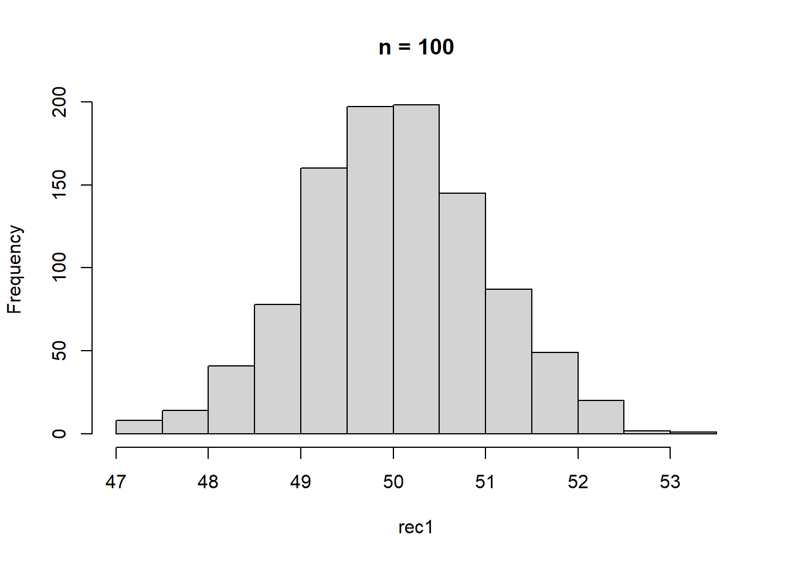
summary(rec1)## Min. 1st Qu. Median Mean 3rd Qu. Max.
## 47.12 49.37 50.01 50.01 50.69 53.21【大数の法則】 母集団から無作為に抜き出された標本の平均値は、標本の大きさが大きいほど、母集団平均に近い値をとる。
サイコロ：母集団平均3.5
\(1*1/6+2*1/6+3*1/6+4*1/6+5*1/6+6*1/6=3.5\)
⇒大数の法則をスクリプトで確認
sample(1:6, 10, replace = TRUE) #サイコロを10回振る試行## [1] 3 6 2 3 1 5 2 6 5 1mean(sample(1:6, 1000, replace = TRUE)) #サイコロを1000回振った結果の目の平均値, 3.5に近似## [1] 3.526#サイコロ10回の標本平均×1000
S <- 1000
rec2 <- numeric(S)
for(i in 1:S){rec2[i] <- mean(sample(1:6, 10, replace = TRUE))} #サイコロ10回の標本平均×1000
summary(rec2)## Min. 1st Qu. Median Mean 3rd Qu. Max.
## 2.000 3.100 3.500 3.504 3.900 4.900#サイコロ1000回の標本平均×1000
S <- 1000
rec3 <- numeric(S)
for(i in 1:S){rec3[i]<-mean(sample(1:6, 1000,replace=TRUE))} #サイコロ1000回の標本平均×1000
summary(rec3)## Min. 1st Qu. Median Mean 3rd Qu. Max.
## 3.305 3.462 3.498 3.499 3.537 3.679#サイコロ10000回の標本平均×1000
S <- 1000
rec4 <- numeric(S)
for(i in 1:S){rec4[i] <- mean(sample(1:6, 10000, replace = TRUE))} #サイコロ1000回の標本平均×10000
summary(rec4)## Min. 1st Qu. Median Mean 3rd Qu. Max.
## 3.442 3.489 3.500 3.500 3.512 3.5502.4. 分散と標準偏差
| 命令 | 説明 |
|---|---|
var() |
分散 |
sd() |
標準偏差 |
標本平均 →標本のちらばり
分散 variance 標本が平均値を中心にどれだけ散らばっているかを表す指標
標準偏差 standard deviaton 分散の平方根、標本が平均値を中心にどれだけ散らばっているかを表す指標（同上）
分散は、計算過程において２乗しているので観測データの単位と異なります。例えば観測データの単位がg（グラム）である場合、分散の単位はg2になります。そこで、分散の平方根である標準偏差を求めることによって、観測データとの単位を揃えることが出来ます。そうすることで、分散よりも扱いやすい値となります。
#母集団N(50, 10^2)から大きさ1000の標本を無作為に抽出
x <- rnorm(1000, 50, 10)
var(x) #分散## [1] 96.26453sd(x) #標準偏差 #10に近似## [1] 9.811449#分散・標準偏差における大数の法則
#n = 1000
S <- 1000; n <- 1000
rec <- numeric(S)
for(i in 1:S){rec[i]<-sd(rnorm(n, 50, 10))}
summary(rec) #標準偏差10に近似## Min. 1st Qu. Median Mean 3rd Qu. Max.
## 9.268 9.851 10.012 10.006 10.160 10.665#より大きいサイズで確認
#n = 10000
S <- 10000; n <- 10000
rec <- numeric(S)
for(i in 1:S){rec[i]<-sd(rnorm(n, 50, 10))}
summary(rec) #より10に近似＝大数の法則## Min. 1st Qu. Median Mean 3rd Qu. Max.
## 9.715 9.954 10.000 10.001 10.047 10.2612.5. 相関係数と共分散
| 命令 | 説明 |
|---|---|
plot() |
散布図 |
cor() |
相関係数 |
cov() |
共分散 |
x <- rnorm(100, 50, 10)
y <- rnorm(100, 50, 10)
plot(x, y, main = "散布図(x, y)") #x,yの散布図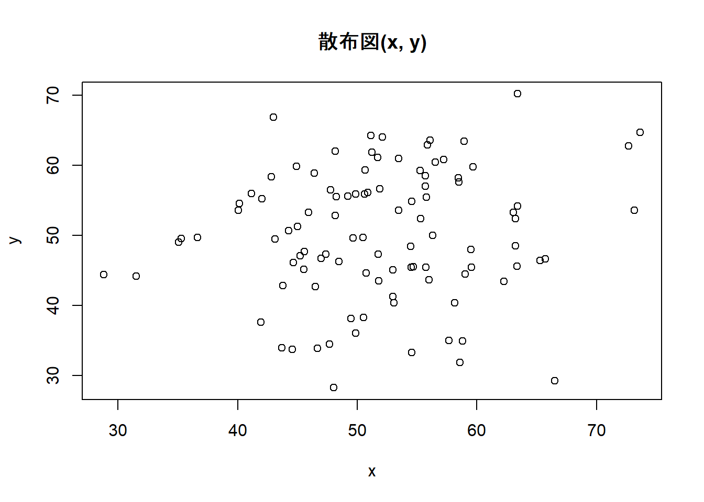
#xと関係のあるzを追加
z <- (x+y)/2
plot(x, z, main = "散布図(x,z)") #x,zの散布図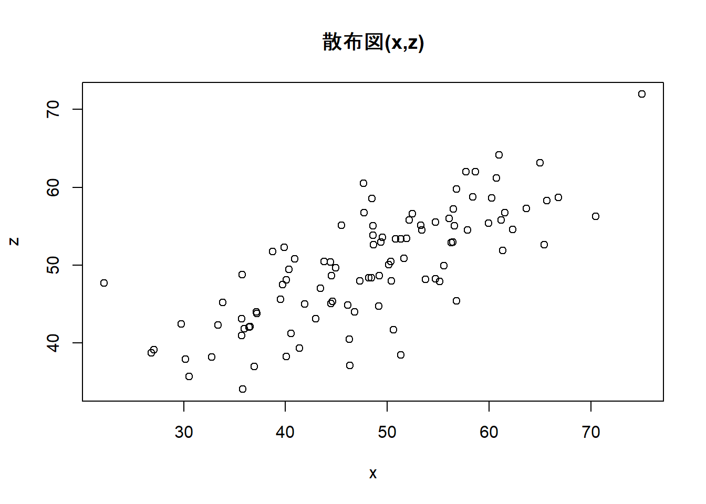
共分散: 2変数の関係の強さを表す指標の一つ。
〈手順〉
- それぞれの変数の平均値を求める
- それぞれの変数の偏差（数値 － 平均値）を求める
- 偏差の積の平均値（＝共分散）を計算する
ただし、データの単位の影響を受けるので値の大きさで単純に比較できない（データスケールに応じて変 化してしまい、共分散の数値だけを見て関係性を判断することは難しい）
⇒ 正規化・標準化の必要＝相関係数
相関係数: 2つの確率変数間の線形関係の強さをはかる指標、
-1以上+1以下の値を取り、1に近づくほど正の相関、-1に近づくほど負の相関
x <- rnorm(100, 50, 10)
y <- rnorm(100, 50, 10)
plot(x, y, main = "散布図(x, y)") #x, yの散布図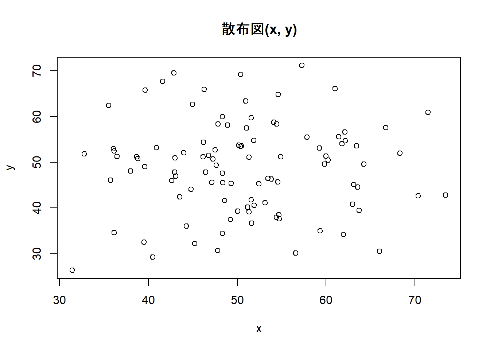
z <- (x+y)/2 #xと関係のあるzを追加
plot(x, z, main = "散布図(x,z)") #x, zの散布図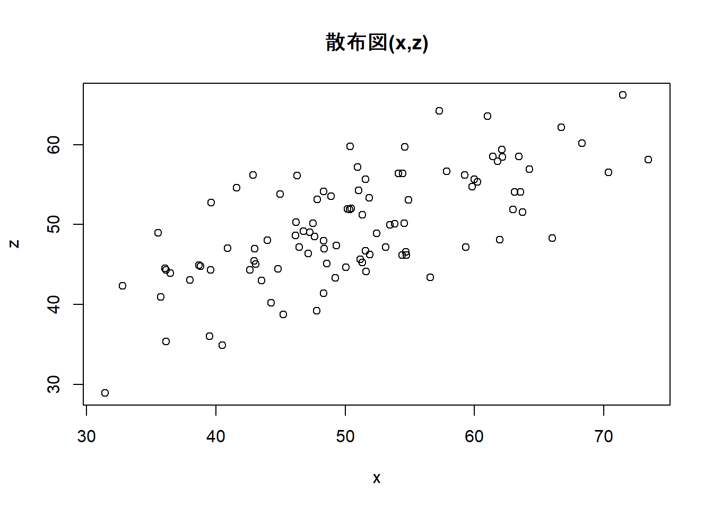
相関係数
cor(x, y)## [1] -0.1342892cor(x, z)## [1] 0.6918721共分散
cov(x, y)## [1] -11.09838cov(x, z)## [1] 39.23859おまけ
x <- rnorm(100, 50, 10)
y <- rnorm(100, 50, 10)
par(family="family_sans")
plot(x, y, main = "散布図(x, y)") #x, yの散布図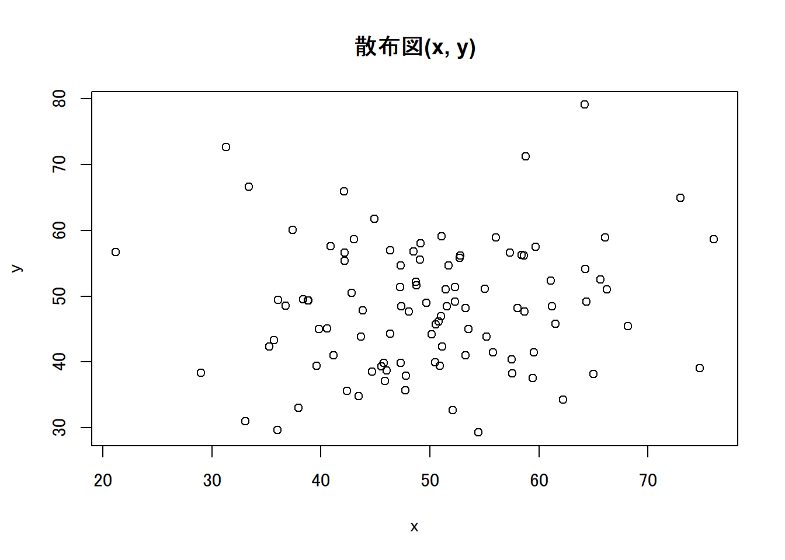
z <- (x+y)/2 #xと関係のあるzを追加
plot(x, z, main = "散布図(x, z)") #x,zの散布図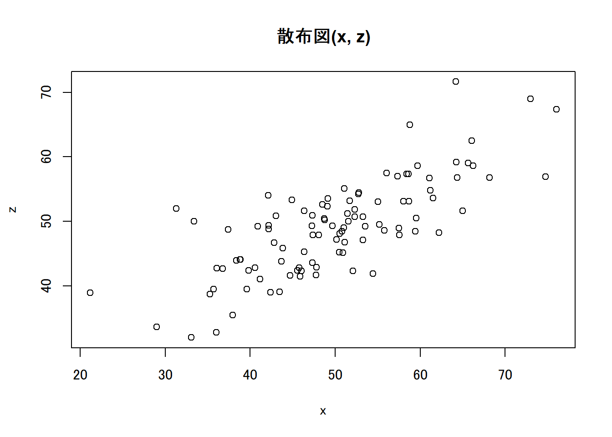
library(ggplot2)
ggplot() +
geom_point(aes(x, y))+
labs(title="散布図(x, y)") +
theme_grey(base_family = "family_sans") +
theme(plot.title = element_text(hjust = 0.5))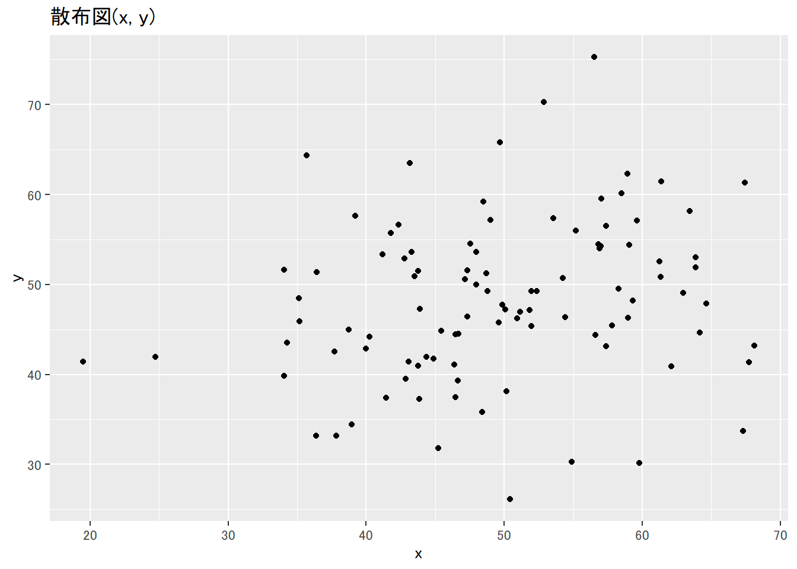
ggplot() +
geom_point(aes(x, z)) +
labs(title="散布図(x, z)") +
theme_grey(base_family = "family_sans") +
theme(plot.title = element_text(hjust = 0.5))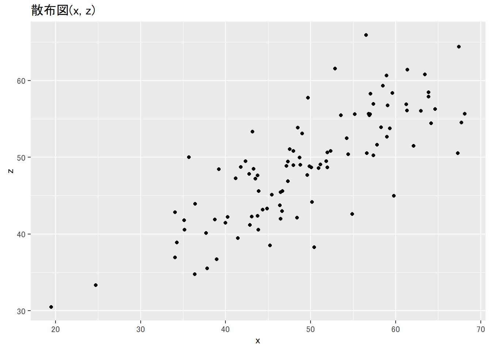
ggplot() +
geom_point(aes(x, y)) +
labs(title="散布図(x, y)") +
theme_bw(base_family = "family_sans") +
theme(plot.title = element_text(hjust = 0.5))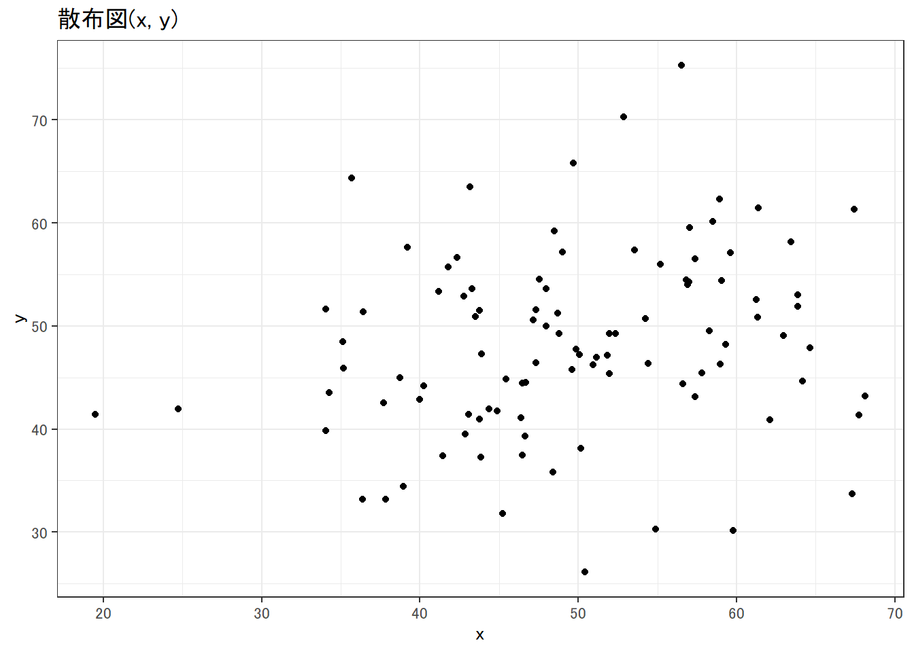
ggplot() +
geom_point(aes(x, z)) +
labs(title = "散布図(x, z)") +
theme_bw(base_family = "family_sans") +
theme(plot.title = element_text(hjust = 0.5))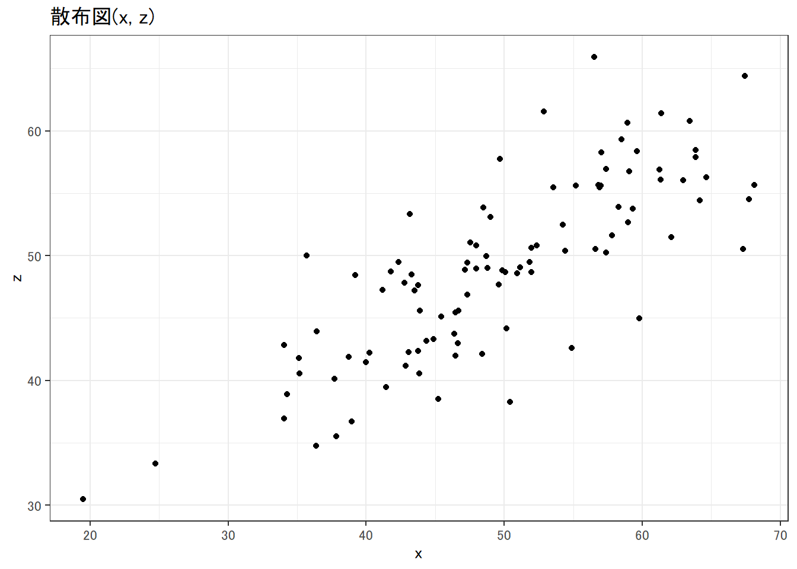
練習問題
問題2.1.
#2.1.1.
runif(100)## [1] 0.422086533 0.919486316 0.145194664 0.052112963 0.889039270 0.161325295
## [7] 0.024609932 0.276547588 0.672466197 0.370644910 0.680834927 0.746728562
## [13] 0.490030357 0.536200838 0.444354168 0.276996047 0.001424931 0.273003306
## [19] 0.010381140 0.816759179 0.957848122 0.047701090 0.301000711 0.645600454
## [25] 0.814004909 0.505601133 0.430487328 0.023274481 0.424311844 0.697935876
## [31] 0.608890953 0.843675453 0.984930594 0.938369333 0.617125113 0.936529350
## [37] 0.830969472 0.117087521 0.329373135 0.786915333 0.003759657 0.506392677
## [43] 0.132381433 0.329986640 0.832924025 0.980961918 0.403582988 0.327623734
## [49] 0.864660091 0.117574935 0.649810073 0.817285427 0.158087219 0.270713199
## [55] 0.676373600 0.645785925 0.776266156 0.865845144 0.766857229 0.564523778
## [61] 0.097828130 0.139293344 0.189947135 0.131716461 0.285114441 0.422150096
## [67] 0.249225997 0.509923635 0.603861696 0.357283466 0.914825845 0.548156816
## [73] 0.332892683 0.362005695 0.192473954 0.797757569 0.241106879 0.832276761
## [79] 0.411474578 0.919769106 0.234830793 0.841619364 0.748153427 0.957512341
## [85] 0.906897904 0.274325241 0.688141011 0.767464082 0.430898391 0.323886683
## [91] 0.576489469 0.630931319 0.150798663 0.798678988 0.062467183 0.582727960
## [97] 0.704339913 0.898350046 0.060476559 0.274977472#2.1.2.
P <- runif(100)
mean(P) #平均## [1] 0.4685705var(P) #分散## [1] 0.06218333sd(P) #標準偏差## [1] 0.2493659#2.1.3.
S <- 1000; n = 100
recP <- numeric(S)
for(i in 1:S){recP[i] <- mean(P)}
summary(recP)## Min. 1st Qu. Median Mean 3rd Qu. Max.
## 0.4686 0.4686 0.4686 0.4686 0.4686 0.4686#Re
x <- runif(100)
#2.1.2.
mean(x)## [1] 0.4693888var(x)## [1] 0.0883045sd(x)## [1] 0.2971607#2.1.3.
S <- 1000; n <- 1000
rec <- numeric(S)
for(i in 1:S){rec[i] <- mean(runif(n))}
summary(rec)## Min. 1st Qu. Median Mean 3rd Qu. Max.
## 0.4692 0.4935 0.5000 0.4998 0.5060 0.5339問題2.2.
x <- runif(100)
y <- rnorm(100, 0, 1)
z <- 1.3*x-0.7*y
#2.2.1.
plot(x, y, main = "散布図(x, y)")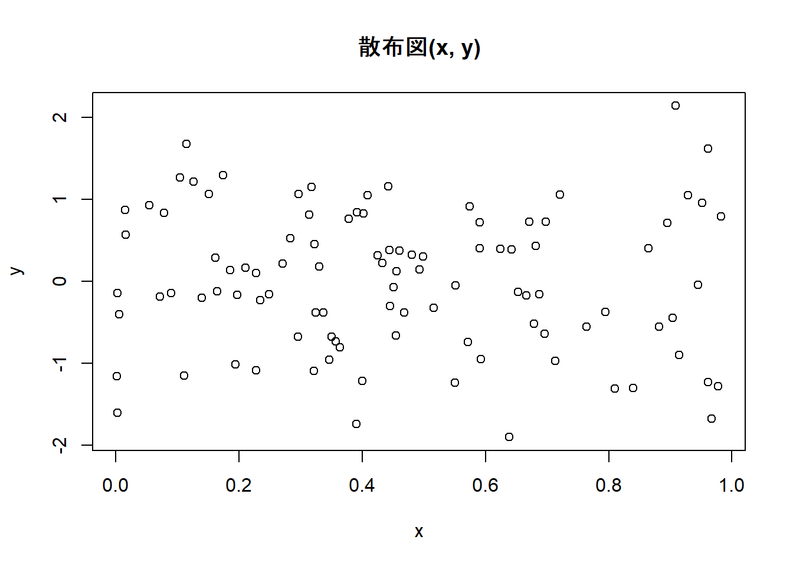
plot(x, z, main = "散布図(x, z)")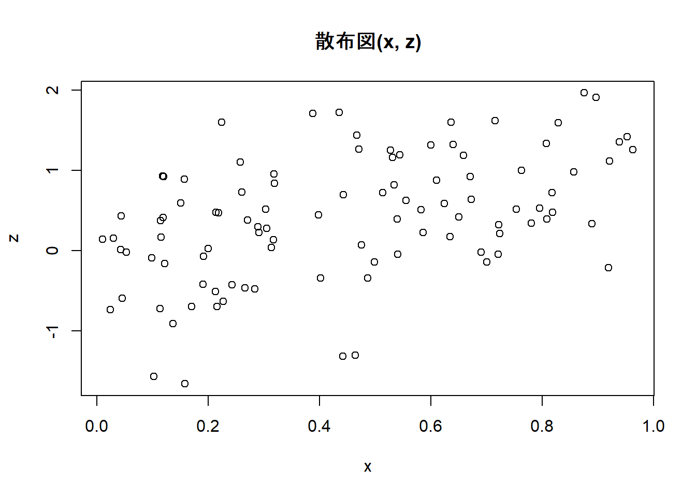
plot(y, z, main = "散布図(y, z)")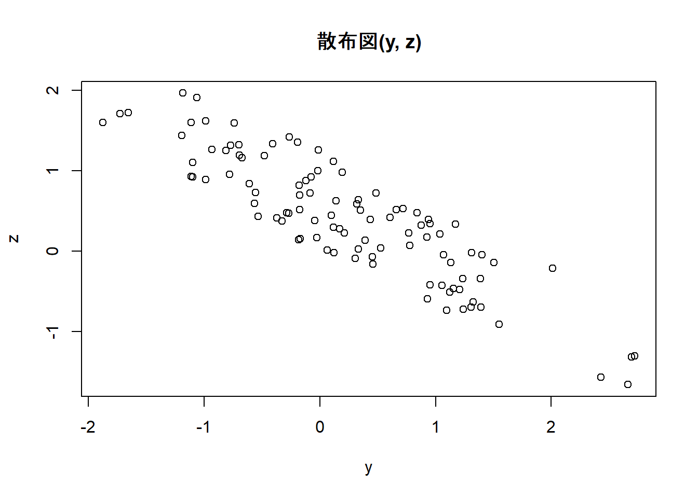
cor(x, y)## [1] -0.07170709cor(x, z)## [1] 0.5665828cor(y, z)## [1] -0.8625116#2.2.2.
x <- runif(n)
y <- rnorm(n, 0, 1)
z <- 1.3*x-0.7*y
n = 10000
cor(x, y)## [1] 0.04798366cor(x, z)## [1] 0.4257615cor(y, z)## [1] -0.8833636par(mfrow = c(1,3))
plot(x, y, main = "散布図(x, y)")
plot(x, z, main = "散布図(x, z)")
plot(y, z, main = "散布図(y, z)")
w <- cbind(x, y, z)
cor(w)## x y z
## x 1.00000000 0.04798366 0.4257615
## y 0.04798366 1.00000000 -0.8833636
## z 0.42576148 -0.88336358 1.0000000#おまけ
library(ggplot2)
x <- runif(100)
y <- rnorm(100, 0, 1)
z <- 1.3*x-0.7*y
g1 <- ggplot() +
geom_point(aes(x, y)) +
labs(title = "散布図(x, y)") +
theme_bw(base_family = "family_sans") +
theme(plot.title = element_text(hjust = 0.5))
g2 <- ggplot() +
geom_point(aes(x, z)) +
labs(title = "散布図(x, z)") +
theme_bw(base_family = "family_sans") +
theme(plot.title = element_text(hjust = 0.5))
g3 <- ggplot() +
geom_point(aes(y, z)) +
labs(title = "散布図(y, z)") +
theme_bw(base_family = "family_sans") +
theme(plot.title = element_text(hjust = 0.5))
grid.arrange(g1, g2, g3, ncol = 3)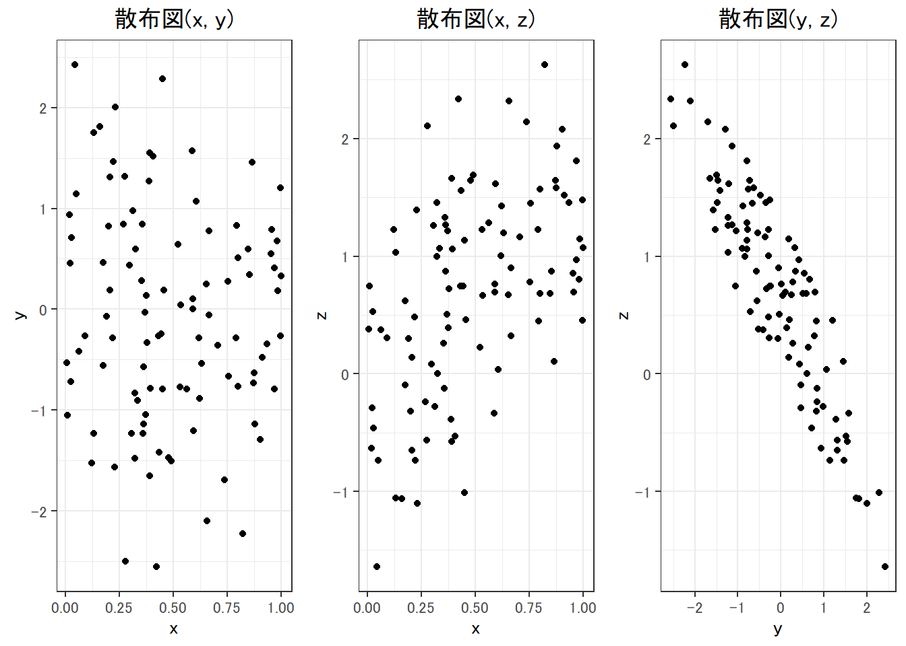
筒井淳也『数字のセンスを磨く データの読み方・活かし方』（2023年, 光文社.）の第4章を参照のこと。↩︎